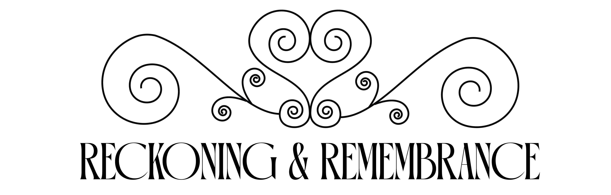
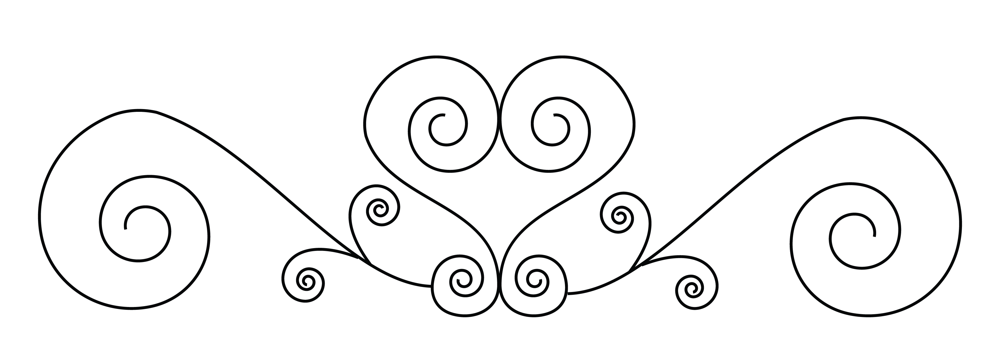
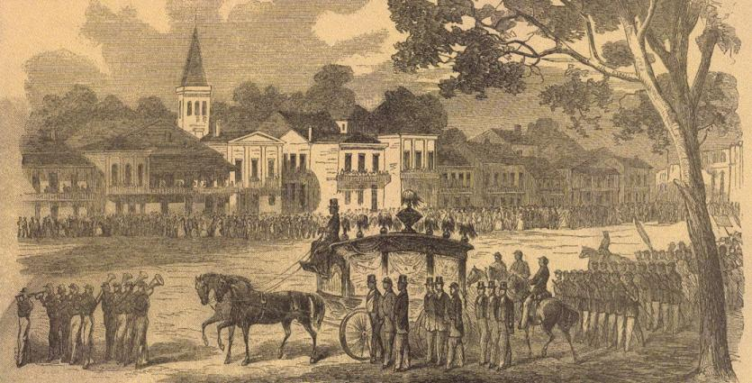
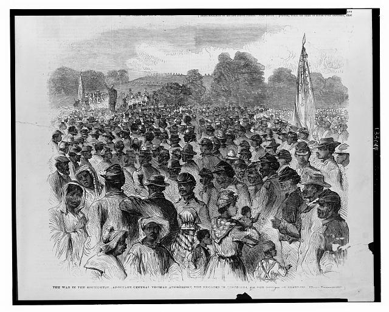
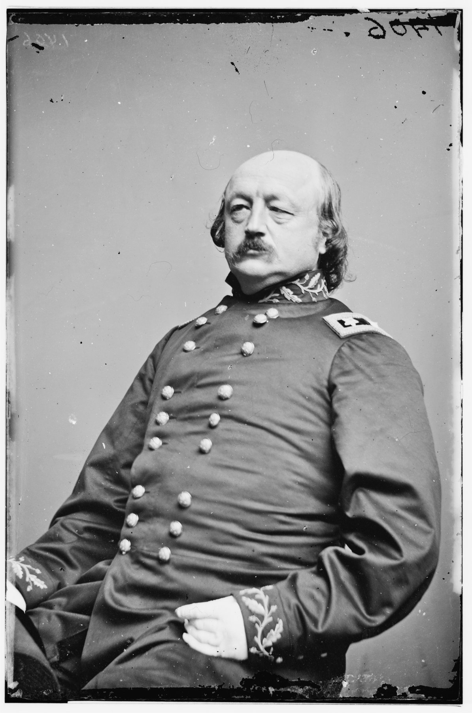
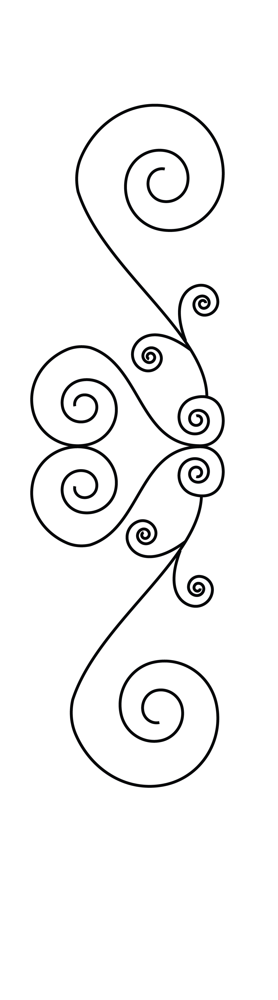

New Orleans, Louisiana · November 14, 2026

The Captain André Cailloux Community Procession
Join us in reclaiming the public memory of New Orleans in the Civil War and Reconstruction.
Honoring Captain André Cailloux and the 1,800 men of color who were the first to join the Union Army.
"He was carried to his grave by his brother soldiers, followed by an immense concourse of citizens. No such funeral procession had ever been seen in New Orleans."
— New Orleans Tribune, 1863, on the funeral of Captain André Cailloux
A History We Were Never Taught
A large complex, called the Touro Almshouse, had recently been built. It was almost complete by the time the war started.
New Orleans was home to the largest free Black population of any city in the antebellum South — a community of educated, propertied, deeply rooted men and women. At the beginning of the war, they faced a difficult choice.

At the start of the war, the Free People of Color offered to join the Confederate army as the "native guards." Governor of Louisiana Thomas Moore officially accepted them into service (mostly for PR purposes). They were never given uniforms or weapons, but were officially part of the army.
In April 1862, the Union Navy battled Confederate forts downriver. They were successful and captured New Orleans. On May 1st, 1862, Union General Benjamin Butler took command of New Orleans. Butler's first task was to prepare for the coming of the Yellow Fever season, then to maintain control of the city and build up his forces against any possible Confederate counter-attack.
Butler, a politician and lawyer, understood the complex political situation of the time. Other commanders in the field had tried to bring Black soldiers into the army to fight, but the Lincoln administration was hesitant.
In July 1862, Lincoln was realizing the need for a new approach. In a letter to Reverdy Johnson, Lincoln declared, "I shall not surrender this game leaving any available card unplayed." Lincoln was settling on Emancipation — and possibly using Black soldiers.
Partnering with the Free People of Color, Butler found a politically acceptable way to officially bring Black Soldiers into the Union Army. Butler was simply doing what the Governor of Louisiana had done, accepting Free Men of Color into the army as the Native Guards.
In August 1862, General Benjamin Butler "Called on Africa" and asked Black Men in New Orleans to assemble at the Touro Alms House as the official "mustering headquarters for native guards." Within months, 1,800 African American men enlisted there and mustered into twenty companies. These were officially the first Black men to join the Union army during the Civil War.
Black women and children also took refuge inside its walls, experiencing, as one soldier later wrote, their first moments of freedom.
Among those who enlisted was Captain André Cailloux — a free Black man, boxer, businessman, and leader of the Friends of Order, an Afro-Catholic mutual aid brotherhood that had spent years purchasing the freedom of the enslaved. Also among those who enlisted at the Touro Alms House was Captain P.B.S. Pinchback, who would go on to become the first African American governor in United States history.
The soldiers of the Native Guard fought at the Battle of Port Hudson, the first major battle with Black soldiers. Their valor and bravery made them national heroes and helped pave the way for additional Black soldiers.
Captain Cailloux was killed leading a charge at the Siege of Port Hudson — one of the first Black Union officers to die in combat. When his body was returned to New Orleans, the city stopped. Thousands lined the streets. Flags flew at half-staff. His funeral procession was among the largest the city had ever seen. The New Orleans Tribune wrote: "No such funeral procession had ever been seen in New Orleans." It was also covered in the New York Times and Harper's Weekly.
As they returned to New Orleans, they began pushing for voting rights. They propelled Louisiana to a new State Constitution, efforts at desegregation, and equal treatment under the law. Between 1868 and 1874, our city led the nation in racial progress and equality.
General Butler declares the Touro Alms House — directly behind 3300 Royal Street — the official mustering headquarters for the Louisiana Native Guards.
1,800 African American men enlist. Among them: Captain André Cailloux, Captain P.B.S. Pinchback, and Joseph Thomas Wilson. Black women and children experience their first moments of freedom inside these walls.
Captain André Cailloux falls at Port Hudson — one of the first Black Union officers killed in combat. New Orleans mourns him as it had never mourned anyone before.
P.B.S. Pinchback — who enlisted at the Alms House — becomes Governor of Louisiana: the first African American to govern any U.S. state.
White Supremacist forces fight the government and take power with "the Battle of Liberty Place." Further violence impacts the presidential election in Louisiana, then negotiations occur to end Reconstruction and pull out federal troops. Reconstruction ends. The victories are dismantled. Jim Crow begins. Confederate monuments go up. The history is buried.
We walk from this ground to honor those who stood here — and we don't let the story be buried again.
From the Historical Record



A Discovery in Our Own Backyard
The Krewe of Red Beans purchased 3300 Royal Street (Beanlandia) in Nov. 2021. It was only after moving in that we discovered what the ground beneath us had witnessed.
One day, we came across this Times-Picayune article from Geographer Richard Campanella.
He documented that the Touro Alms House — the colossal Gothic complex that stood directly behind Beanlandia, extending into what is now Crescent Park — was declared by General Butler in August 1862 as the official "mustering headquarters for native guards." The footprints of those structures literally underlie the Beanlandia building today.
We believe this history should be known and celebrated by all New Orleanians — and as the guardians of the property, we believe it's our responsibility to help educate and boost the visibility of this significant historical moment.
We partnered with the André Cailloux Center, with a shared historical connection to his story. Our partnership is focused on boosting public memory of André Cailloux and others who worked for freedom and equality. New Orleans was a true national leader in Civil Rights. These are important lessons for our city to remember today.
1,800 free Black men enlisted on this ground. Captain André Cailloux walked this ground. Captain P.B.S. Pinchback — who would become the first African American governor in U.S. history — walked this ground. Black women and children took shelter here, experiencing their first moments of freedom in 1862.
It is not enough to know this. It must be honored — publicly, on foot, through the streets these men knew.
November 14 · 10 AM – 3 PM
This is not a march in a traditional sense. It is a ritual. A living ceremony — to bring together the community and rededicate the public memory of our city.
Most importantly, this is an opportunity for community to come together. To honor those brave New Orleanians who joined to fight slavery and racism. Honor America's 250th anniversary remembering this history with us.
Our Partner & Destination
Before he was a soldier, André Cailloux was a community builder. He led the Friends of Order — an Afro-Catholic mutual aid brotherhood that pooled resources, organized families, and purchased the freedom of the enslaved. He was, by every account, a man of extraordinary charisma and moral courage.
The André Cailloux Center — housed in the former St. Rose de Lima Church — carries his name forward as a living commitment, not a monument. It is a gathering place, a healing space, and a community anchor for the people of this city. It is where his legacy is not studied but practiced.
The Center is the destination of our procession. Every step we walk toward its doors is a step toward the New Orleans that Cailloux and his brothers fought to build.
Support the CenterCaptain André Cailloux led the Friends of Order mutual aid brotherhood, enlisted with the 1st Louisiana Native Guard in 1862, and gave his life at Port Hudson in 1863 — one of the first Black Union officers killed in combat.
Housed in the former St. Rose de Lima Church, the Center carries Cailloux's legacy forward through education, healing, and community care — not as a monument, but as a living institution.
Our procession ends at the André Cailloux Center — the same name as the man who marched from the same ground 163 years ago. Walking there is the act of remembrance.
Two Organizations. One Purpose.
Reckoning & Remembrance is a collaboration between two New Orleans institutions who believe that remembering the past together is how we build a better future together.
Founded in 2008, the Krewe of Red Beans is a nonprofit arts organization rooted in the Bywater neighborhood. For nearly two decades, the Krewe has used culture — parade, music, food, and community — as a tool for neighborhood connection and public memory.
When we discovered that our home at 3300 Royal Street had been the headquarters of the African American Civil War Soldiers, we knew the work required more than a plaque.
kreweofredbeans.org →
The André Cailloux Center is a 501(c)(3) performing arts and cultural justice center. Named for New Orleans' own Civil War hero, the Center carries his legacy forward through education, healing, community care, and the uplifting of Black life in our city.
Housed in the former St. Rose de Lima Church, the congregation that hosted André Cailloux's funeral. The Center is the destination of our procession — and a partner in programming and public-memory making.
Learn about the Center →This procession models the kind of racial healing we believe is possible: two organizations — rooted in different communities, with shared values — walking together, raising funds together, and honoring history together. This is what truth and reconciliation looks like on the ground.
November 14, 2026 · 10 AM
The procession is free and open to all. RSVP below so we can keep you informed — gathering details, what to wear, and everything you need to know before November 14.
Can't March? Still Make an Impact.
Whether you're joining us in the streets or watching from afar, your donation helps transform the public memory in New Orleans. Foster truth and reconciliation.
All donations will be shared between the Krewe of Red Beans and the André Cailloux Center — to support efforts at public memory.
Get in Touch
Questions about the procession, partnership opportunities, or press inquiries — we'd love to hear from you.